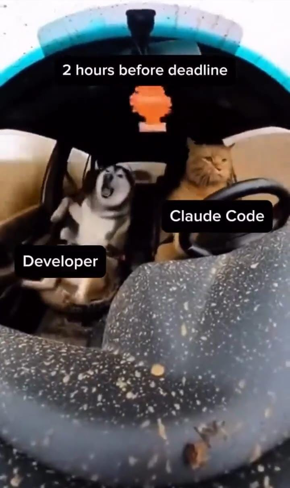
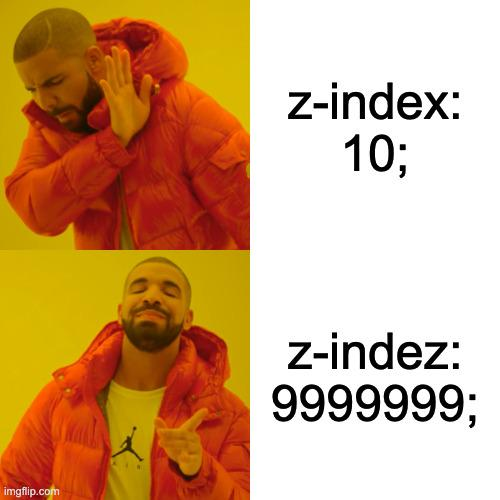

Acerca de mí
👋 ¡Hola! Soy Oliver
Soy Oliver, un apasionado desarrollador web enfocado en crear experiencias modernas e interactivas. Actualmente me considero a un buen nivel en HTML, CSS, JavaScript, Node.js, PHP, Python y MySQL.
Mi objetivo es estudiar Ingeniería en Sistemas para profundizar mis conocimientos y convertirme en un profesional más completo. Disfruto creando proyectos que resuelven problemas reales y me ayudan a entender cómo funciona la web de principio a fin.
Mi stack actual incluye varias tecnologías tanto para front-end como back-end. Trabajo con bases de datos relacionales, APIs REST, diseño de interfaces y me enfoco en mejorar el rendimiento y la accesibilidad de mis proyectos, y claramente hago lo posible por cada día mejorar.
Me gusta mucho la música, sobre todo el rap, ya sea en inglés o en español. También me gusta el fútbol, aunque ahora no lo veo mucho. Mis colores favoritos son el negro, el blanco y el morado. Me gusta mantener una buena alimentación junto con un buen estado físico.
Soy más feliz cuando estoy aprendiendo algo nuevo, construyendo proyectos paralelos y compartiendo lo que descubro en el camino. Para conocer más sobre mi trabajo, siéntete libre de revisar mi portafolio.
😄 Un par de memes que describen mi vida como desarrollador:

Esta interfaz fue construida con CSS puro y mucha paciencia. Una de mis formas favoritas de aprender CSS es recreando diseños desde cero y experimentando con layouts y animaciones.

CSS puede parecer simple al principio, pero dominar layouts, responsividad y estilos limpios es un verdadero superpoder en el desarrollo front-end.
🤓 Datos curiosos sobre mí:
-
💻
Entorno de programación: Modo oscuro 🌑 + música 🎧 + café ☕
-
🚀
Proyectos favoritos: Dashboards, aplicaciones interactivas e integraciones con APIs
-
📚
Aprendiendo actualmente: Patrones avanzados de desarrollo, arquitectura de backend y construcción de aplicaciones full-stack escalables
-
🎯
Meta: Estudiar Ingeniería en Sistemas y construir productos significativos
- 🌐
-
💬
Cita favorita: "La mejor manera de aprender a programar es construyendo cosas y manteniéndose curioso."
¡Gracias por visitar! Si estás aquí, probablemente estés aprendiendo, construyendo o explorando tecnología — y eso ya es una victoria 🚀
Espero que tus bugs sean fáciles de arreglar, tus APIs siempre respondan y tus divs se mantengan centrados 😎